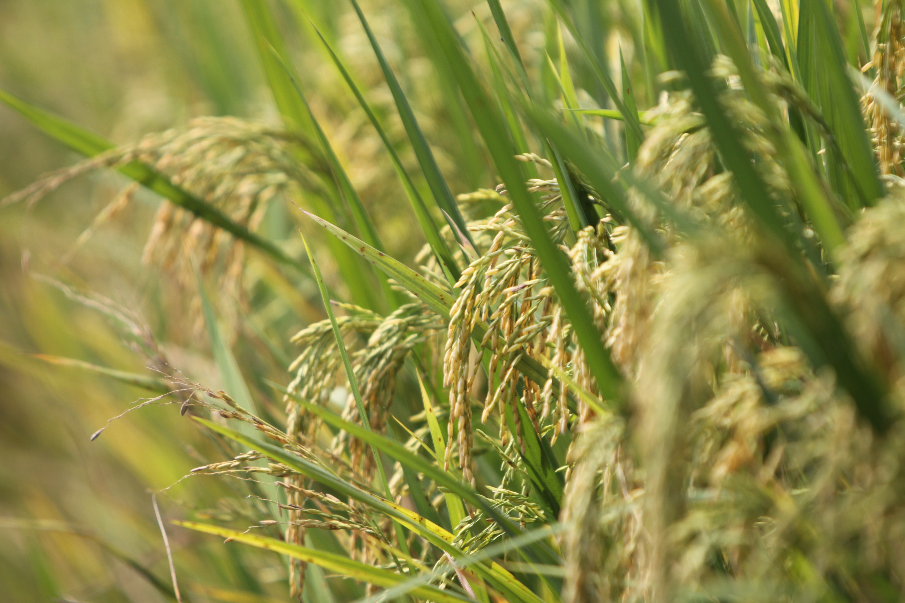

خضراء يا السعودية بالهندسة الوراثية
الهندسة الوراثية هي مجال علمي متقدم يهتم بتعديل الجينات في الكائنات الحية بما في ذلك النباتات، بهدف تحسين الصفات الوراثية للنباتات وتعزيز قدرتها على التكيف مع الظروف البيئية المختلفة.

الفيديو غير مدعوم في هذا المتصفح.
انتقل إلى الصفحة التالية